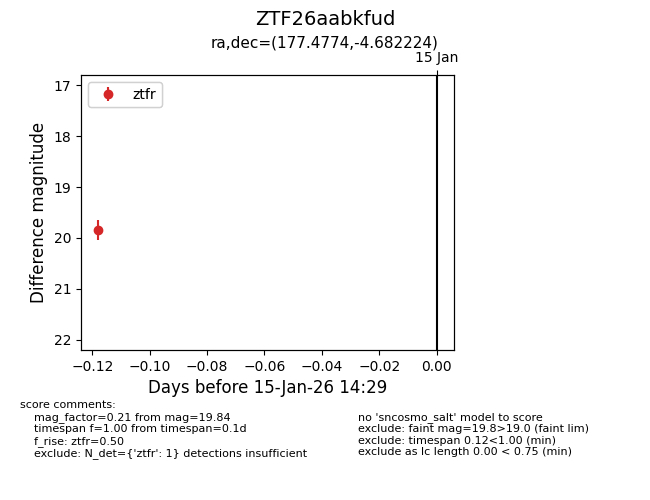
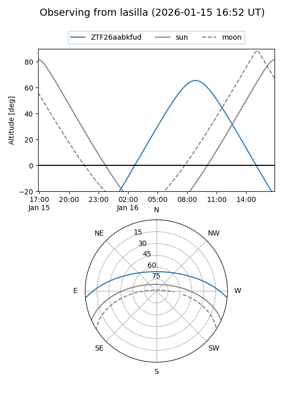
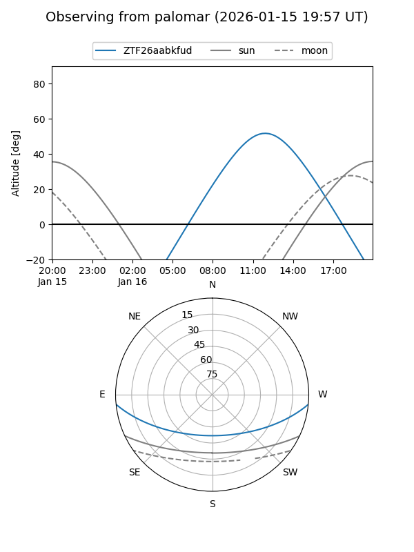

ZTF26aabkfud
Target ZTF26aabkfud at 2026-01-15 14:30
Aliases and brokers:
FINK: link
Lasair: link
ALeRCE: link
alt names
ZTF26aabkfud (ztf,fink_ztf)
Coordinates:
equatorial (ra, dec) = 177.4774,-4.68222
equatorial (HMS+DMS) = 11:49:54.58,-04:40:56.01
galactic (l, b) = (275.5692,+54.88728)
Flags:
Photometry:
last ztfr=19.84
1 ztfr detections
Lightcurve

Visibility


Additional plots